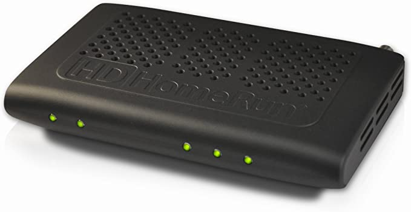

# TV Technical
### May 6, 2021
---
## TV 24x7
~35-100 channels
- cable coax
- satellite (eg: Galaxy 19 over the Americas)
- over-the-air HD signals
- online feeds
---
## Recording
~2013 moved from Windows laptops
to single unix/ubuntu supermicro rack node
---
## TV 'nix

Recording many TV channels on one UNIX box
---
## Hardware

 - Tuners
- SiliconDust HDHomeRuns (w/ leased cable card decryptors)
- Novra S75 (satellite DVB-S)
- Satellite dishes on roofs
---
## Software
| | |
| ---------- | ---------- |
| ~2010 | sharing up to 3 minute clips |
| ~2015 | clip tagging (eg: subjects, political ad, misc.) |
| 2020 | create `.mp4` with 1 pass (was 2) (~2x faster) |
| 2020 | moved processing from PHP to Javascipt |
| 2021 | `GPU` - 100x faster .mp4 creation |
| 2021/2022 | reuse h.264 from broadcast
- Tuners
- SiliconDust HDHomeRuns (w/ leased cable card decryptors)
- Novra S75 (satellite DVB-S)
- Satellite dishes on roofs
---
## Software
| | |
| ---------- | ---------- |
| ~2010 | sharing up to 3 minute clips |
| ~2015 | clip tagging (eg: subjects, political ad, misc.) |
| 2020 | create `.mp4` with 1 pass (was 2) (~2x faster) |
| 2020 | moved processing from PHP to Javascipt |
| 2021 | `GPU` - 100x faster .mp4 creation |
| 2021/2022 | reuse h.264 from broadcast
(all but 5 channels moved from MPEG2) |
---
## As we process faster
- show avail for researcher search **~45m** after show finishes
- can get that to **~10m** (h.264 reuse)
- can get to **1-2m** behind live (HLS)
---
## Chyron scanning  OCR the "lower third" region
OCR the "lower third" region

👇
```
AFTER WH MEETING, SCHUMER DISHES
WHEN HE THOUGHT NIC WAS OFF
```
https://archive.org/services/third-eye.php